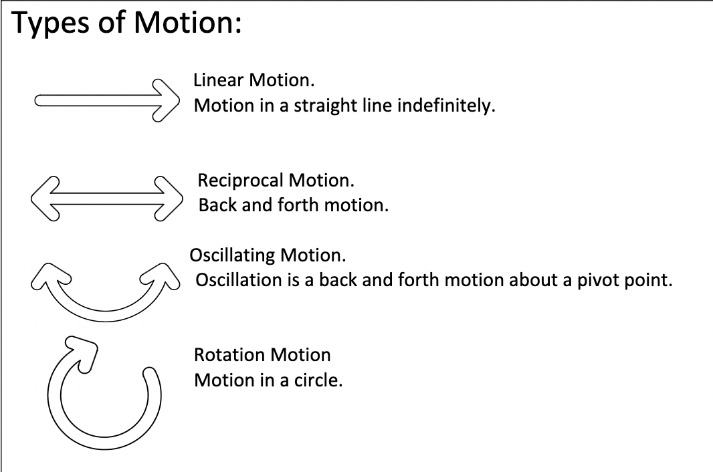

- Vibromotors
- Basic Circuit Switch Circuit
- Soldering
- Using a breadboard
- Cams and Followers
- Linkages
- Cranks
- Gears or Belts
This is where the course summary goes.
Material Gathering
Introducing:
DC Motor Workshop
DC Motors
How to Control a DC Motor
Pulse Width Modulation
Driver Boards That We Are Using:
Extra Links:
transistor circuit for arduino motor control DC Motor Direction ControlWeek 4 Review
Week 4 Review Slides
Servo Motor Workshop
Servo Motors
Servos in the Real World
David Bowen - Cloud Piano
1. Using servos to press something.
David Bowen - Tele-Present Wind
Using two servos to move in a circular motion. (x/y tilting)
Adafruit Project Examples Hackaday Project ExamplesArduino Sketches
Most Basic Arduino Example
Sweep
Knob
Toggle LED with Button
Functions
Questions
Try applying this toggle with the servo motor.
Crawler / Walker / Jumper / Climber Workshop
Week 5 Review
- Check new Artist Works for Inspiration
How to attach something to your motor:
Stepper Motors
L298N Driver
Stepper Driver
TMC2208 Driver
CNC Shield
Week 9 - Mechanisms/Automata Workshop
Mechanism Study Assignment Due: April 1st
Make a mechanism using at least one of the following mechanisms:
The mechanism should have some movement that is activated either by a manual crank or a motor.
Think about the types of movements that can be achieved by these mechanisms. For example, how to turn rotary motion into linear motion, reciprocal motion, oscillating motion, etc.
We will work on this all day during class and will be viewing what we made in the beginning of next class (April 1st).
Cams and Followers
Linkages and Cranks
Linkages CranksWeek 10 - Automating your Automata with a Motor
Mounting Hubs
 Amazon Link
Amazon Link
Small Scale and Final Project
You must describe your plan for the assignment, define what kind of kinetic artwork it is according to the typology discussed in class, estimate the size of the piece, list the materials you need, and describe how you will source them. You must also describe your schedule for the remaining weeks in class and set weekly milestones for yourself. We will discuss your plans in class next week.